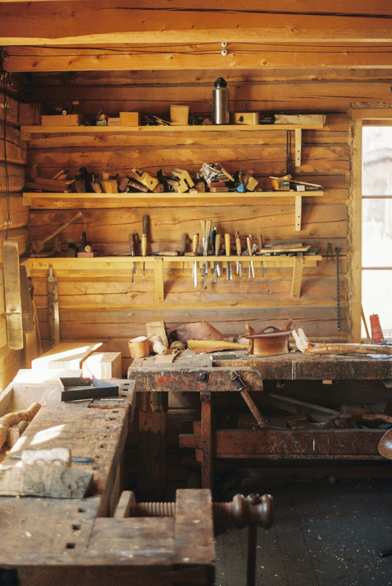

BIFROST.Software sob medida
Dica rápida
Comece o sistema pelo que mais dá trabalho
Pedidos, agenda ou estoque: resolva um processo primeiro e acrescente o resto depois.
Mais no perfil →

Pedidos, agenda ou estoque: resolva um processo primeiro e acrescente o resto depois.